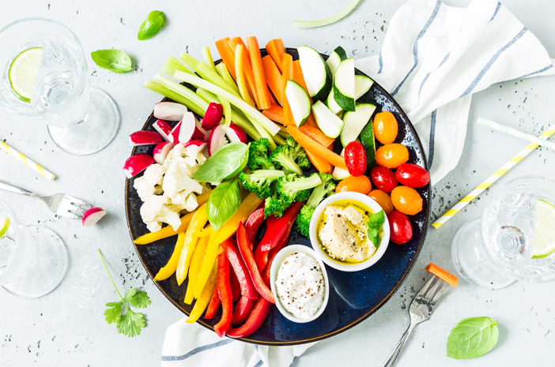
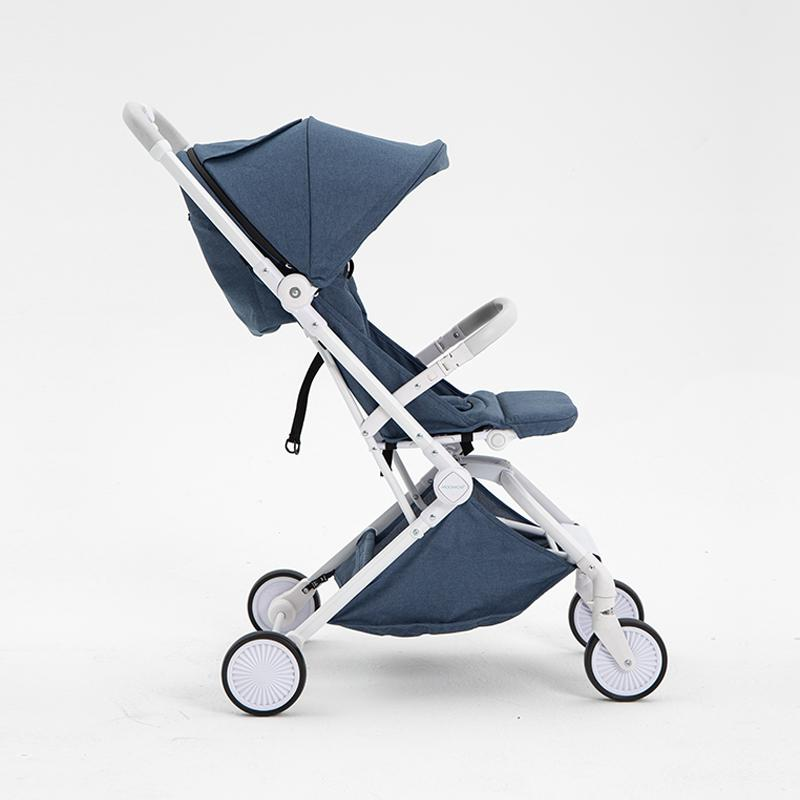
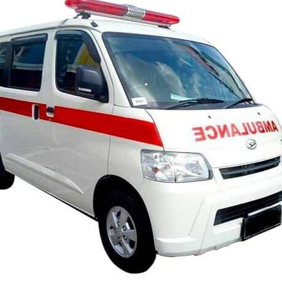

Fasilitas
Fasilitas Gratis untuk Anak-anak dengan Penyakit Jantung Bawaan di Rumah Singgah.
-
Rumah Singgah Gratis
Tempat tinggal sementara yang nyaman, aman dan istimewa untuk perawatan anak dengan penyakit jantung bawaan.
-

Suplai Makanan Sehat
Memenuhi kebutuhan gizi harian untuk anak dengan penyakit jantung bawaan dan pendampingnya.
-
Susu & Popok
Memenuhi kebutuhan yang berarti seperti popok, susu, dan lainnya untuk anak dengan penyakit jantung bawaan.
-

Alat Bantu Pendukung
Dukungan alat bantu yang memudahkan anak dengan penyakit jantung bawaan seperti stroller, kursi roda, tabung oksigen, alat nebulizer, suction pump, oximeter dll.
-
Obat-obatan
Memenuhi kebutuhan obat-obatan yang tidak ditanggung asuransi atau BPJS.
Belum Tersedia -

Mobil Ambulans
Memudahkan kunjungan baik dari maupun ke rumah sakit, transportasi yang aman dan nyaman untuk anak dengan penyakit jantung bawaan.
Belum Tersedia -
Pojok Bermain dan Membaca
Menghibur dengan berbagai permainan dan kegiatan belajar untuk menghilangkan kejenuhan dan stress anak dengan penyakit jantung bawaan selama menjalani proses pengobatan.
Belum Tersedia -

Pendampingan & Konsultasi
Fokus kesembuhan anak dengan penyakit jantung bawaan adalah yang utama dengan memberikan dukungan emosional dan meningkatkan pengetahuan para pendamping.